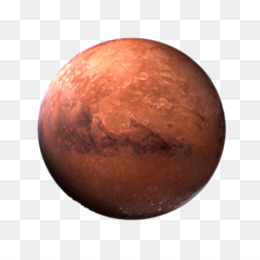
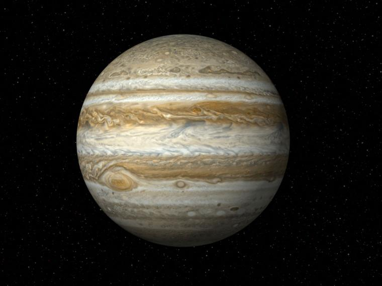
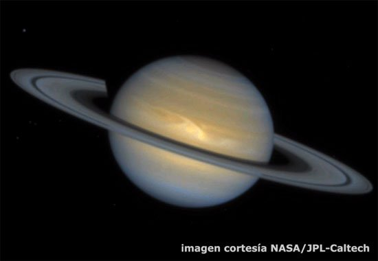
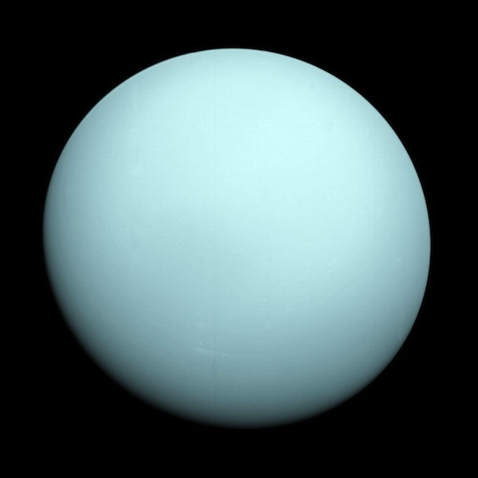
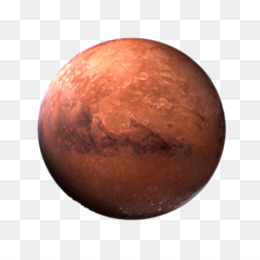
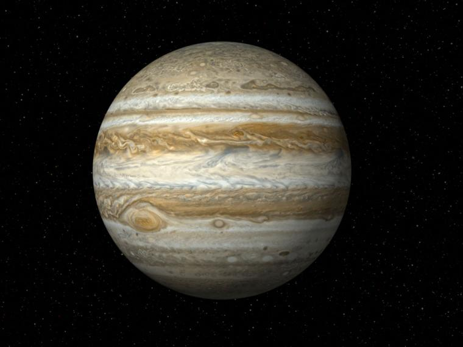
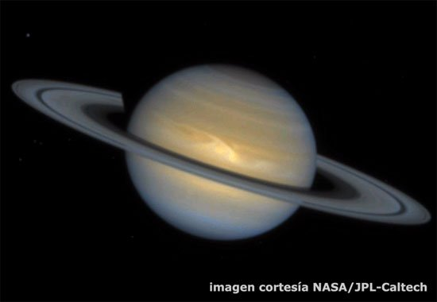
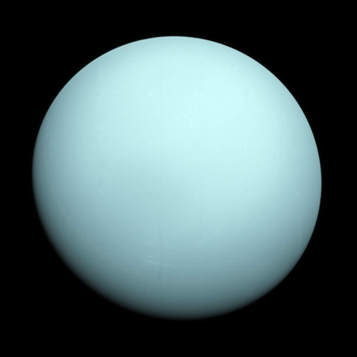

La cabeza en las estrellas: este es el universo

 








El origen del universo
¡Asunto peliagudo! Interrogarse sobre el origen del universo no es mas ni menos que abordar la cuestión fundamental de la humanidad, que atormenta a los seres humanos desde la primera noche de los tiempos. Pero no hay por qué inquietarse, pues no nos perderemos en conjeturas metafísicas abstractas. Nuestro objetivo es mucho más modesto y, sobre todo, pragmático. Consiste en exponer, de forma esquemática, el estado actual de los conocimientos científicos sobre este tema tan intrigante.
El concepto del Universo
El concepto del universo, antes de la aparición del método científico en el siglo XVII, destila una visión
teológica. Los dioses, que se convertirán en uno solo, ordenan los planetas y las estrellas y crean al ser
humano, tras proveer la Tierra de todo lo necesario para su supervivencia. El siglo XX proporciona los medios
necesarios para verificar con instrumentos precisos, de forma experimental, la estructura, el nacimiento y la
evolución del universo.
Hasta hace tiempos relativamente recientes se postulaban cuatro teorías
diferentes:
- El Universo en expansión:
- Nace tras una explosión gigantesca hace dieciséis mil millones de años (el famoso Big bang), está en expansión continua y no conoce limites
- El Universo pulsante
- Al igual que la hipotesis anterior, el universo está en expansión continua, pero llegado a un punto de dicha expansión se contraerá y volverá a ocupar su espacio original, para explotar de nuevo. se denomina "pulsante" porque alterna la contracción y la expansión. En opocisión al big bang, se conoce también como Big crunch
- El Universo multiple
- Existe una infinidad de universos, cada uno de ellos en fase de Big Bang o expansión en momentos diferentes
- El universo estacionario
- Sujeto a posibles modificaciones, seria el universo conocemos, infinito y eterno
Ya para despedirnos... ¿te gustaría saber tu peso en otros planetas? y también en el sol y la luna?
Averigua tu peso en otros planetas solo con un click